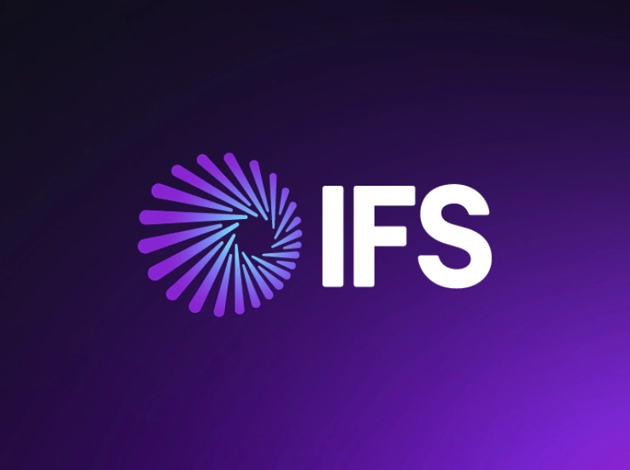
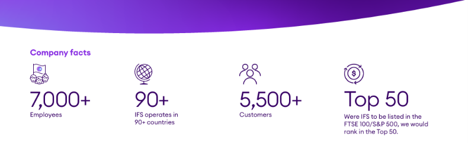
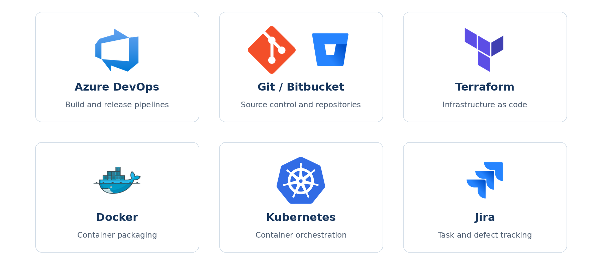
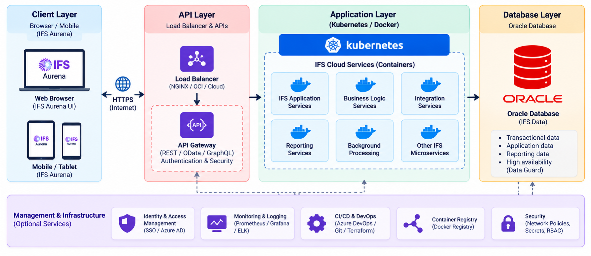
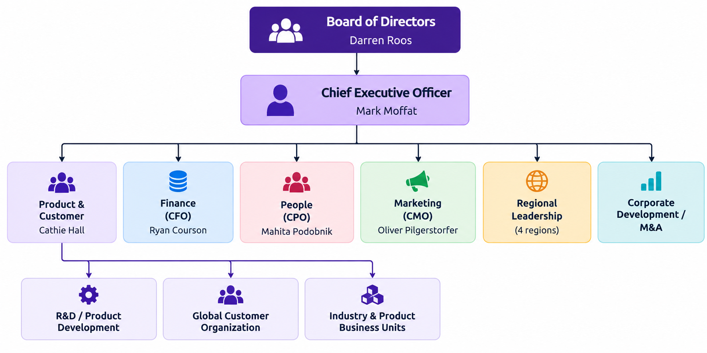
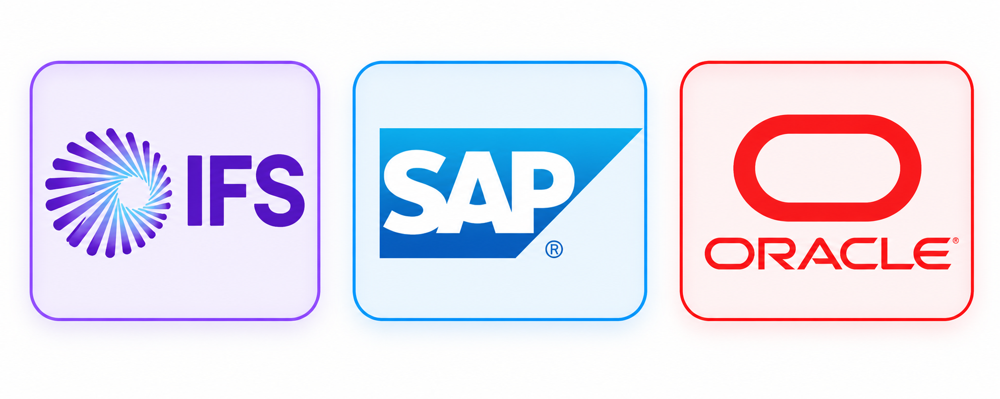

IFS (Industrial and Financial Systems) – Company Analysis Wiki
Team members: [Team Members]
Table of Contents
- Introduction
- Type of Company
- Tools and Technologies Used
- Analysis of Business Strategies and Marketing
- Company History and Organizational Structure
- Products and Services
- Target Market and Customer Base
- Competitor Analysis
- Company Culture and Human Resource Practices
- Project Management and Software Development Practices
- Additional Supporting Information
- References
1. Introduction

Source: IFS Official Website / R&D Office
1.1 Company overview
IFS (originally Industrial and Financial Systems) is a multinational software company headquartered in Linköping, Sweden, founded in 1983. It describes itself as the world's leading provider of Industrial AI™ and enterprise software for "hardcore businesses that service, power and protect our planet". In plain terms, IFS builds software that helps organisations that manufacture goods, maintain complex physical assets (aircraft, power grids, telecom networks, machinery) and deliver field service run their operations more efficiently.
Its flagship product is IFS Cloud, a single, composable platform covering Enterprise Resource Planning (ERP), Enterprise Asset Management (EAM), Field Service Management (FSM), Enterprise Service Management (ESM/ITSM) and Supply Chain Management (SCM), with AI ("IFS.ai") embedded across it.
Quick facts
| Item | Detail |
|---|---|
| Legal / trade name | IFS AB / IFS |
| Founded | 1983, Linköping, Sweden |
| Headquarters | Teknikringen 5, Linköping, Sweden |
| Employees | 7,000+ (fact sheet and Glassdoor profile) |
| Footprint | Operates in 90+ countries (fact sheet); other sources cite 80+ countries and 42–43 offices |
| Customers | 5,500+ (fact sheet, Q2 2025) |
| Ownership | Private; majority held by private-equity investor EQT, with Hg, TA Associates and other minority investors |
| Valuation | Over €15 billion (announced April 2025) |
| Revenue | FY2024: €1.228 billion; ARR passed €1 billion. A Wikipedia entry reports ≈ €1.7 billion for 2025 (not yet confirmed against an IFS publication) |
| CEO | Mark Moffat (since January 2024) |
| Tagline / brand ideas | "Industrial AI™", "Moment of Service™", "Team Purple" |
1.2 Mechanisms used to gather information
This analysis combines the following sources (primary sources first):
- Company-published material – IFS "About" page, careers page, the IFS Fact Sheet (Q2025), press releases and earnings announcements.
- Employee-review platform – the Glassdoor company profile (ratings, interview feedback, culture scores).
- Public job postings (via the TA Associates portfolio job board and SmartRecruiters) – used to infer the real technology stack, practices and skills expected.
- News and analyst sources – TechTarget, Verdantix, SportBusiness, ERP Today, IT Brief, Sri Lankan business press, Gartner Peer Insights summaries.
- Public LinkedIn posts by IFS employees, as surfaced by search results (IFS's own LinkedIn company page blocks automated access, so it could not be read directly).
- Sri Lanka-specific sources – because IFS runs one of its largest R&D centres in Colombo and has a long partnership with the University of Moratuwa.
Limitations. We did not interview current IFS employees. LinkedIn and Facebook company pages could not be browsed automatically, so follower counts and post-level analysis are left for the team to add. Some figures (employee numbers, number of countries, customer counts) differ between sources or years; where they differ we say so.
1.3 Goals of the analysis
- Understand what IFS does, how it makes money and who it serves.
- Identify its technology stack, delivery practices and business strategy.
- Compare it with competitors and identify strengths and improvement areas.
- Understand the culture, hiring and internship routes — particularly relevant to Sri Lankan IT undergraduates.
2. Type of Company

2.1 Business model
IFS is a B2B (business-to-business) enterprise software vendor. Its revenue model has three layers:
| Revenue layer | Explanation |
|---|---|
| Recurring revenue (subscription / cloud / support) | Customers pay yearly subscriptions to use IFS Cloud (hosted on IFS-managed cloud or deployed in other environments). Recurring revenue was 82% of total in Q1/H1 2025 and 84% in H1 2026. |
| Cloud revenue | The fastest-growing slice: +39% YoY in Q1 2025, +37% in H1 2025, +24% in H1 2026. |
| Services | Consulting, implementation, training, managed services and customer-success programmes delivered by IFS and its ~400 partners. |
Other notable model features:
- Software product company, not a body-shop. It develops its own platform (R&D centres in Sweden, Sri Lanka, Canada, the US and elsewhere) rather than reselling other vendors' products.
- Growth by acquisition. IFS regularly buys specialist software companies and plugs them into IFS Cloud (see Section 5.2).
- Partner-assisted sales. 400 partners; 45% of net-new logos won in 2024 involved a partner.
2.2 Size classification
Large-scale enterprise. Evidence: 7,000+ employees, 90+ countries of operation, annual recurring revenue above €1 billion, and a €15 billion valuation. IFS itself states that if it were listed on the FTSE 100 or S&P 500 it would rank in the top 50. It is privately held (not listed on a stock exchange) and PE-backed.
It began as a student-founded start-up in 1983 and has moved through SME → mid-market → large-enterprise stages. Its careers page still advertises "the energy of a start-up" within a global enterprise (Analysis: a deliberate employer-branding message).
3. Tools and Technologies Used

This section has two parts: (A) the technology IFS builds its products on and (B) the tools IFS uses internally to run the company. Most evidence is drawn from IFS's own job postings and architecture announcements.
3.1 Product platform and architecture

| Area | Technology / concept | What it means |
|---|---|---|
| Cloud-native architecture | Containers + Kubernetes | Since the "evolved architecture" announced in 2019, IFS Cloud is built for both cloud and on-premises using container technology, so it scales in the cloud and remains portable between clouds. |
| Evergreen delivery | Continuous-update model | Customers can stay on the latest version without painful, large-scale upgrades. |
| Model-driven, declarative development | IFS Development Studio and Marble (IFS's own language) | Much application logic is described declaratively and compiled/generated, which speeds up development and keeps customisations upgrade-safe. |
| User experience | IFS Aurena | The web-based UX layer for IFS Cloud. |
| Database / server-side logic | Oracle PL/SQL | An undergraduate-trainee posting names PL/SQL work alongside Marble for application components. |
| APIs | Native, open REST / OData APIs | "Native API enablement of the entire set of capabilities" supports integration with other enterprise systems. |
| AI layer – IFS.ai | Embedded generative, agentic and predictive AI | Combines simulation, optimisation and anomaly detection inside the business applications; 25R1 shipped 200+ AI capabilities. |
3.2 Languages, frameworks and engineering tools (from job postings)
| Category | Tools named in IFS postings |
|---|---|
| Programming languages | Java (strong emphasis, incl. Spring Boot in IFS TheLoops), C# /.NET, PL/SQL, scripting (shell/bash) |
| Front-end | React, Angular (platform/lifecycle teams) |
| Messaging / streaming | Kafka |
| Containers & orchestration | Docker, Kubernetes |
| Cloud platforms | Microsoft Azure (heavily referenced), AWS, Google Cloud |
| Infrastructure as code & automation | Terraform, Ansible |
| Source control | Git, Bitbucket |
| CI/CD | Azure DevOps Pipelines, Bitbucket pipelines, GitLab-style tool sets |
| Testing | Jest (unit), Cypress and Katalon Studio (end-to-end) |
| IDEs | Eclipse, Visual Studio / VS Code |
3.3 Internal business and marketing tools
| Area | Tool | Evidence |
|---|---|---|
| Recruitment | SmartRecruiters (applicant tracking) | IFS vacancies link to
careers.smartrecruiters.com/IFS1 |
| Website / content | Sitecore (content hub) with a Next.js front end; Google Tag Manager for analytics | Visible in the ifs.com page metadata (Analysis, from page source) |
| Customer community | IFS Community portal (25,000 members) | |
| Employee-facing collaboration | Not publicly documented (the team could ask contacts or check LinkedIn) | — |
Note on "dogfooding". IFS states a commitment to internal AI adoption and also runs its own software; the postings say AI is used by colleagues to unlock creativity and productivity.
4. Analysis of Business Strategies and Marketing
4.1 Core business strategies
1. Narrow industry focus ("hardcore businesses"). IFS deliberately targets asset-intensive and service-intensive industries — aerospace & defence, energy/utilities, construction & engineering, manufacturing, telecommunications and transportation. Rather than compete head-on with SAP or Oracle as a general ERP, it positions itself as the specialist for companies with physical assets, field workforces and complex projects.
2. One platform, one data model. IFS Cloud brings ERP, EAM, FSM, SCM and ESM onto a single platform with a shared data model, so customers avoid stitching together separate tools. This "composable" approach is a core differentiator.
3. AI-first repositioning ("Industrial AI™"). IFS rebranded its direction around Industrial AI — AI applied to physical, operational problems (predictive maintenance, optimised scheduling, anomaly detection) rather than generic chatbots. Key moves:
- IFS.ai woven through all products.
- IFS Nexus Black (launched April 2025): an innovation programme / accelerator that builds bespoke AI solutions with customers in weeks. Its offerings include Resolve for field service and utilities.
- IFS Loops Agentic Platform (from the TheLoops acquisition): AI "digital workers"; IFS reports 60% of agentic transactions fully automated.
- IFS Zero (May 2026): an agentic "Emissions Operating System" that cuts emissions-data collection effort by up to 30%.
4. Recurring-revenue, cloud-first financial model. Recurring revenue rose to 82% (2025) and 84% (H1 2026) of total revenue; under previous CEO Darren Roos it climbed from 36% to 79%. This gives predictable income and supports the private-equity valuation.
5. Growth through acquisition. A steady M&A programme (Section 5.2) fills portfolio gaps — asset investment planning (Copperleaf), industrial AI (Falkonry), connected worker (Poka), agentic AI (TheLoops), AI supply chain (7bridges) and warehouse execution (Softeon).
6. Ecosystem and partnerships. Strategic partnerships with Siemens, AVEVA, NEC (reported H1 2026), Anthropic, Boston Dynamics, 1X Technologies and Microsoft, PwC and Infosys (SI/consulting) widen reach and credibility. Also: an accelerator for SAP customers migrating to IFS Cloud and a partnership with UKG in North America.
7. Value-based selling. IFS backs sales conversations with quantified outcomes: its Digital Business Value Assurance model estimates ≈ 17.6millionaveragevaluepercustomer, andan * * IDCstudy(May2025) * * reportsa * * 4145.5 million average annual benefit** per organisation.
4.2 Marketing strategy
| Marketing lever | What IFS does |
|---|---|
| Brand message | Distinctive, memorable phrases: Industrial AI™, Moment of Service™, "hardcore businesses", "Industrial AI that matters"; purple brand identity ("Team Purple"). |
| High-visibility sport sponsorship | Chelsea FC – Principal Partner (front-of-shirt, multi-year, with IFS AI being embedded in the club's operations); Cadillac Formula 1® Team – Official Partner (IFS software supports team operations); Sri Lanka Cricket – Official Team Sponsor for the ICC Men's T20 World Cup 2026. Earlier, Aston Martin F1 featured as a customer story. |
| Analyst relations & awards | Heavy use of Gartner (Peer Insights, Customers' Choice, #1 EAM market share), IDC, GigaOm, G2 Best Software Companies in EMEA, The Software Report, Future Enterprise Award and others. |
| Customer proof | Case studies (Doppelmayr, Electrolux, China Airlines, Stockholm Exergi…), customer community of 25,000, 80% customer-satisfaction metric. |
| Events & thought leadership | Annual flagship event IFS Unleashed (further product launches flagged for October 2026), a New York Industrial AI event in November 2025 with Anthropic, Boston Dynamics, MIT CISR, Microsoft, PwC, Siemens; blog (blog.ifs.com), social channels on LinkedIn, X, Facebook, Instagram (@ifs.ai) and YouTube. |
| Product launches as PR | Frequent press releases (Nexus Black, IFS Zero, Resolve, 25R1 release, acquisitions) keep IFS in trade media. |
| Local community & CSR marketing | IFS Foundation (rural poverty alleviation in Sri Lanka), university collaboration, volunteering days taken by 25% of employees. |
| Regional targeting | Localised press activity (e.g., London, Dubai, Tokyo, Colombo release datelines) and localised websites in many languages. |
(Analysis) The sports sponsorships serve two purposes: raising brand awareness of an otherwise "B2B-invisible" company, and creating live "proof" of its Industrial AI claims (the sports teams are themselves asset- and performance-intensive organisations).
5. Company History and Organizational Structure
5.1 Founding story
Board → CEO → executive team → functions (mark as interpretation)
Delete this box, then insert your image here (add alt text + source caption)
IFS was founded in 1983 by five engineers/university friends from Linköping University in Sweden. In the company's own telling, when they landed their first client they pitched a tent outside the customer's site and worked double shifts to deliver the project — a story that still anchors IFS's "get close to the customer" culture. Ulf Stern is named in IFS material as one of the founders who stayed with the company for many years.
5.2 Major milestones (timeline)
| Year | Milestone |
|---|---|
| 1983 | IFS founded in Linköping, Sweden |
| 1985 | First product released: IFS Maintenance |
| 1990 | Full suite launched as IFS Applications |
| 1991 | First international office (Norway); then Finland, Denmark and Poland |
| 1997 | R&D centre opened in Colombo, Sri Lanka (started with ~28 staff in a two-room office) |
| 2009 onwards | M&A programme begins (accelerating strongly from about 2017) |
| 2015 | Acquired by EQT (with Hg/TA among investors); earlier it had been a listed company |
| 2019 | "Evolved architecture" (containers/Kubernetes, Aurena, evergreen) announced at IFS World Conference |
| 2020 | Acquired Clevest (utilities-focused field service) |
| 2021 | IFS Cloud launched; acquired Axios Systems (ESM/ITSM – assyst) and Customerville (customer feedback) |
| 2022 | Acquired Ultimo (cloud EAM, Netherlands) |
| 2023 | Acquired Poka (connected worker) and Falkonry (industrial AI/anomaly detection) |
| 2024 | Jan: Mark Moffat becomes CEO; Darren Roos becomes Chair. Jun/Aug: acquires Copperleaf (asset investment planning; reported ≈ CA$1 billion, IFS's largest deal). FY2024 revenue €1.228bn; ARR passes €1bn |
| 2025 | Apr: launches Nexus Black; valuation exceeds €15bn after minority-stake sale to new investors including an ADIA subsidiary and CPP Investments. H1: acquires TheLoops (agentic AI); 25R1 ships 200+ AI capabilities. Aug: acquires 7bridges (AI supply chain). Nov: partnerships with Anthropic, 1X, Siemens |
| 2026 | Jan: Cadillac F1 and Sri Lanka Cricket sponsorships; Chelsea FC Principal Partner deal. Mar: completes Softeon acquisition → IFS Softeon. May: launches IFS Zero. Jul: H1 2026 – ARR +25%, cloud +24%, recurring 84%. New CFO Ryan Courson |
5.3 Ownership and governance
- Private-equity owned. EQT is the majority owner; Hg and TA Associates are long-standing investors; the 2025 transaction brought in additional minority investors including a wholly owned subsidiary of the Abu Dhabi Investment Authority and CPP Investments.
- Board: Chaired by Darren Roos (former CEO) since January 2024; he succeeded Jonas Persson, who had chaired since EQT's takeover.
- Executive Management Team provides global operational leadership; the company is organised around a four-region focus with each region led by an executive team member.
5.4 Organizational structure
IFS does not publish a full organisation chart, so the table below
combines what is public with reasonable inference
(Analysis)

| Key function | What it does | Evidence |
|---|---|---|
| R&D / Product Development | Designs and builds IFS Cloud and acquired products; includes platform, DevOps, security/observability and shared-application teams | |
| Global Customer Organization | Consulting, support and customer success (e.g., "Global Consulting" managers; "Global Customer Organization – UK") | |
| Sales, Solutions and Partners | Direct sales (e.g. business-development and presales architect roles) plus partner management (400 partners) | |
| Marketing & Communications | Brand, events, sponsorships, employer branding (e.g., Employer Branding Specialist in Sri Lanka) | |
| People (HR) | Recruitment, ERGs, mentoring, learning | |
| Finance | Reporting, results announcements, valuation transactions | |
| Corporate Development / M&A | Dedicated acquisitions unit led by a COO; integrates acquired companies | |
| World Operations Sri Lanka | Large R&D, support and corporate-service hub headed by the President of IFS Sri Lanka |
5.5 Founders and key management
| Name | Role | Notes |
|---|---|---|
| Five founders (1983) | Founding team from Linköping University | Ulf Stern named as one of them |
| Mark Moffat | Chief Executive Officer (since Jan 2024) | Previously IFS Chief Customer Officer; earlier senior positions at PwC |
| Darren Roos | Chair of the Board | CEO before Moffat; revenue more than tripled under his tenure |
| Cathie Hall | Chief Product and Customer Officer | Listed on IFS leadership page |
| Ryan Courson | Chief Financial Officer | Appointed 2026; previously Matthias Heiden was CFO (2025) |
| Mahita Podobnik | Chief People Officer | Listed on IFS leadership page (spelled "Mihita" in the page text) |
| Oliver Pilgerstorfer | Chief Marketing Officer | |
| Ranil Rajapakse | President, IFS Sri Lanka | Leads World Operations in Sri Lanka |
| David Coleman | COO, acquisitions unit | Presented IFS acquisitions overview (2025) |
| Christian Pedersen | Former Chief Product Officer (2019 press) | Leadership roles have since been reorganised |
6. Products and Services
ERP, EAM, FSM, SCM, ESM and IFS.ai on one platform
Delete this box, then insert your image here (add alt text + source caption)
6.1 The IFS Cloud platform
IFS Cloud is a "fully composable", AI-powered platform. "Composable" means customers can start with one capability (for example EAM) and add others later on the same data model.
| Product area | Purpose and functionality | Typical users |
|---|---|---|
| Enterprise Resource Planning (ERP) | Finance, procurement, inventory, manufacturing, project accounting, HR processes. Strong in project-based and product-centric businesses; named a Gartner Peer Insights Customers' Choice for Cloud ERP for Product-Centric Enterprises. | Manufacturers, engineering firms, contractors |
| Enterprise Asset Management (EAM) | Tracks and maintains physical assets – work orders, preventive and predictive maintenance, spare parts. Ranked #1 EAM market share by Gartner (2023 and 2024 reports). | Utilities, energy, transport, facilities |
| Field Service Management (FSM) | Scheduling and optimising technicians, mobile apps, contracts, warranties and parts; AI-assisted planning. Rated 4.7/5 on Gartner Peer Insights vs. Microsoft 4.3 and SAP 4.3. | Service organisations, appliance/equipment makers |
| Enterprise Service Management / ITSM (IFS assyst) | IT and business service desks; named a Leader and Fast Mover in GigaOm Radar (2024); 4.9/5 on Peer Insights. | IT departments, shared-service centres |
| Supply Chain Management (SCM) | Planning, logistics, AI-driven supply-chain optimisation (7bridges) and warehouse execution (IFS Softeon). | Manufacturers, distributors, logistics |
| Aviation MRO & A&D solutions | Maintenance, repair and overhaul for airlines and defence fleets (e.g., China Airlines). | Airlines, MROs, defence |
6.2 AI products and acquired specialist products
| Product | What it does | Origin |
|---|---|---|
| IFS.ai | Umbrella for embedded AI: simulation, optimisation, anomaly detection, copilots and agents | Organic + acquisitions |
| IFS Nexus Black | Fast-track AI innovation lab; co-builds bespoke industrial AI with customers in weeks. Resolve is a field-service/utilities offering (fault prediction, technician support) | Launched Apr 2025 |
| IFS Loops Agentic Platform | Create and deploy AI "digital workers" that automate transactions | From TheLoops acquisition |
| Copperleaf | Asset-investment planning and decision analytics for infrastructure operators (customers include National Grid, Manitoba Hydro, One Gas) | Acquired 2024 |
| Falkonry | Anomaly detection and predictive analytics from sensor data | Acquired 2023 |
| Poka | Connected-worker platform for factory/field staff (customers include Bosch, Coty) | Acquired 2023 |
| IFS Zero | Emissions Operating System to measure, disclose and optimise carbon emissions | Launched May 2026 |
| IFS Remote Assistance | AR/video-assisted field support (won a BIG Innovation award) | |
| Customerville | Voice-of-customer and survey feedback integrated into IFS Cloud | Acquired 2021 |
| 7bridges / IFS Softeon | AI supply-chain and warehouse management | Acquired 2025 / 2026 |
| Ultimo | Cloud EAM (Netherlands) | Acquired 2022 |
6.3 Services
- Implementation and consulting (including "IFS Success" programmes for quick value realisation).
- Support and managed cloud services.
- Training and the IFS Community (25,000 members).
- Partner ecosystem (≈ 400 partners incl. Infosys, PwC, Microsoft).
- Migration accelerators, e.g., for customers moving from SAP.
6.4 Quantified customer outcomes (as published by IFS)
| Metric (average customer, IFS-reported) | Value |
|---|---|
| Capex saving from better inventory replenishment | $2.2m (20.7%) |
| Productivity gain from optimised planning and scheduling | $1.9m (24.9%) |
| Improvement in project cost control | $1.2m (22.9%) |
| Faster MRO turnaround | $3.2m (11%) |
| Total expected value | > $17.6m, of which > $7.1m sustainability-related |
| IDC three-year ROI | 414%; time to value 11 months; $5.5m annual benefit; 50% faster outage resolution |
(Source: IFS Digital Business Value Assurance model and IDC Business Value Report, May 2025 — vendor-reported figures that should be read as marketing claims.)
7. Target Market and Customer Base
7.1 Target market and segments
IFS targets mid-size to very large organisations that depend on physical assets, projects and field workforces. Its six strategic industries are:
| Industry | Example use cases | IFS-reported impact examples |
|---|---|---|
| Aerospace & Defence | MRO, fleet maintenance, defence programmes | 25% shorter turnaround times; 18% lower labour costs; aircraft maintained with IFS.ai carry 800m+ passengers a year |
| Energy, Utilities & Resources | Grid and plant maintenance, field crews, asset investment | Oil & gas customers see 26.4% productivity increase; 8 of 10 top US energy companies use IFS.ai |
| Construction & Engineering | Project planning, cost control | 18.7% better planning and follow-up; 2% higher project margin |
| Manufacturing | Inventory, production, order management | 27.5% better inventory turnover; 200bn packages a year produced by customers using IFS.ai |
| Telecommunications | Network maintenance, field operations | 19.4% less labour/expense; 1bn+ people connect daily on networks maintained with IFS.ai |
| Transportation / Service | Fleet, elevators, escalators, service contracts | 46% automation rate; 2bn+ people a day use elevators and walkways maintained with IFS.ai |
7.2 Geography
IFS is organised into four regions (Americas; Europe; Middle East & Africa; Asia-Pacific). Publicly the company states a presence in 90+ countries (fact sheet), while other profiles cite 80+ countries and 42–43 offices. Key hubs: Linköping (HQ), Colombo (large R&D centre), the US (Itasca IL, Conshohocken PA, Lake Elmo MN), Australia and others. Sri Lanka alone hosts over 1,000 IFS employees and the company has described itself as the country's largest technology employer.
7.3 Customer types
- Large global enterprises (e.g., aerospace OEMs, major utilities, global manufacturers).
- Mid-market industrial companies that adopt IFS as a modern alternative to legacy ERP.
- Service organisations needing field-service and ITSM tools.
- Public figures: 21 customers on the FTSE 350, 19 on NASDAQ and 48 on the Nikkei 225. IFS reports customers manage ~$2.4 trillion of critical assets using IFS.ai.
7.4 Publicly named clients and projects
| Customer | Industry | What they use IFS for |
|---|---|---|
| Doppelmayr | Ropeways / cable cars | Central data hub for sales, engineering, manufacturing, installation and maintenance; ~150 projects per year |
| Electrolux | Appliances | Field service management with mobile app and workforce planning |
| China Airlines | Aviation | ~10 years of integrated ERP and MRO |
| Copa Airlines | Aviation | Cloud-based MRO to cut costs and grounding time |
| Stockholm Exergi | Energy | Wall-to-wall ERP and EAM on IFS Cloud implemented within a year |
| Aston Martin F1 Team | Motorsport/manufacturing | Smart-factory and operations efficiency |
| Berkeley Group, Elvia, Cheer Pack North America, Auto Windscreens | Construction, utility, packaging, automotive service | ERP/project costing, energy-grid work, growth agility, ESM |
| Lockheed Martin | Defence | Supply-chain use (reported in a partner presentation) |
| New customers in H1 2025 | Various | ArcelorMittal, Callaway, Collins Aerospace, Hitachi Energy, Japan Airlines, TotalEnergies |
| Chelsea FC / Cadillac F1 | Sport | Deploying IFS AI/software across operations (sponsorship + technology) |
| Bosch, Coty (Poka) | Manufacturing / consumer | Connected-worker platform; e.g., Coty cut new-hire onboarding time by 57% |
8. Competitor Analysis

8.1 Major competitors
| Competitor | Where it competes with IFS | Notes |
|---|---|---|
| SAP (S/4HANA, SAP EAM, SAP Field Service) | ERP, EAM, FSM | Largest ERP vendor; IFS runs a migration accelerator aimed at SAP customers. |
| Oracle (Oracle ERP Cloud, Fusion) | ERP, EAM, FSM | Strong at the large-enterprise end. |
| Infor (CloudSuite, Infor EAM) | ERP, EAM for industry | Described as IFS's closest alternative for asset-intensive and service operations. |
| IBM Maximo (Maximo Application Suite) | EAM / APM | Deeply configurable asset-management suite; ERP typically sits in separate SAP/Oracle systems. |
| Hexagon (HxGN EAM) | EAM | Rated below IFS on Gartner Peer Insights. |
| Microsoft Dynamics 365 | ERP, FSM | Frequently shortlisted alongside IFS. |
| ServiceNow, Atlassian, BMC, Ivanti | ITSM | Compete with IFS assyst. |
| ServiceMax, Salesforce Field Service | FSM | Smaller in the Gartner FSM ranking. |
8.2 Comparison (selected competitors)
| Dimension | IFS | SAP | Oracle | IBM Maximo |
|---|---|---|---|---|
| Positioning | Specialist "Industrial AI" platform for asset- and service-intensive industries | General-purpose enterprise suite with deep industry editions | Broad cloud applications and infrastructure | Asset management / APM suite |
| Scope | ERP + EAM + FSM + ESM + SCM on a single data model | ERP-centric; EAM and field service as modules | ERP-centric; add-on EAM/field service | EAM + APM; ERP is external |
| Technology | Kubernetes-based, evergreen, declarative/model-driven (Marble), embedded AI | S/4HANA, SAP BTP | Oracle Cloud Infrastructure/Fusion | Red Hat OpenShift or SaaS |
| Typical customer | Mid-to-large industrial and service companies | Very large enterprises | Large enterprises | Asset-heavy enterprises, often alongside SAP/Oracle |
| Peer Insights rating (Mar 2025) | ERP 4.6; EAM 4.7; FSM 4.7; ITSM (assyst) 4.9 | ERP 4.1; FSM 4.3 | ERP 4.4; FSM 4.2 | Fewer than 3 reviews listed in EAM top-5 chart |
(Ratings: Gartner Peer Insights as reproduced in the IFS fact sheet; they reflect customer opinion and a vendor-selected comparison set.)
8.3 Competitive advantages
- Single platform and data model across ERP, EAM, FSM and service management — fewer integrations than best-of-breed stacks.
- Vertical depth in asset-intensive industries (aviation MRO, utilities, defence).
- Strong customer ratings and repeated analyst recognition (Customers' Choice, #1 EAM share).
- Quantified value claims (IDC 414% ROI, 11-month time to value).
- Early and visible AI strategy (IFS.ai, Nexus Black, agentic workforce) plus partnerships with Anthropic and Siemens.
- Growth momentum: ARR growth of 25–30% in 2025–2026, higher than the market average claimed by IFS in earlier fact sheets (≈ 3×).
- Stable offshore engineering hub in Sri Lanka built over 25+ years.
- Employee tenure: IFS claims twice the industry's average tenure (earlier fact sheet).
8.4 Areas for improvement (Analysis)
| Area | Reasoning |
|---|---|
| Brand awareness vs. SAP/Oracle | These vendors dominate procurement shortlists; IFS uses sport sponsorships to close this gap, but awareness outside industrial circles remains lower. |
| Integration of many acquisitions | Copperleaf, Poka, Softeon, TheLoops and others are "currently being integrated" into IFS Cloud (per IFS's own community session); maintaining a single user experience and data model is an ongoing challenge. |
| Growth deceleration | ARR growth slowed from 30% (2025) to 25% (H1 2026); cloud revenue growth from 37–39% to 24% — expected at scale but worth monitoring. |
| Valuation expectations and AI claims | Large valuation plus bold AI messaging raises pressure to prove AI-derived ROI at scale. |
| Employee sentiment on leadership and pay | Glassdoor: senior management 3.8/5 and compensation 3.9/5 are the lowest sub-ratings; culture and work-life scores fell ~3% in 12 months. |
| Implementation complexity | As with most enterprise suites, large deployments need partners and change management (general industry observation). |
8.5 SWOT summary (Analysis)
| Strengths | Weaknesses |
|---|---|
| Specialist focus; unified platform; high ratings; strong ARR growth; strong PE backing | Smaller scale than SAP/Oracle; reliance on acquisitions; integration complexity |
| Opportunities | Threats |
| Industrial AI demand; SAP migration wave; sustainability reporting (IFS Zero); supply chain/warehouse expansion | Big-vendor AI bundling; economic slowdowns in capital-intensive industries; AI hype/regulation; talent competition |
9. Company Culture and Human Resource Practices
9.1 Values and working environment
IFS's careers site says it fosters a culture of agility, collaboration, trust and grit, and promises an inclusive environment with mentorship, inclusive hiring and Employee Resource Groups (ERGs). Older materials list "agility, trustworthiness and collaboration" as the core values — grit has been added more recently. The values are documented in the "IFS Purple Book". Employer-brand hashtags include #MakeYourMoment and #MomentOfService, and employees are referred to as "Team Purple".
Working-style messages from job postings and the careers page:
- Flexible / hybrid work and a sense of community.
- "We get things done together" — dynamic, start-up-like energy inside a global company.
- Globally diverse teams working across time zones.
- Commitment to sustainability (IFS facilities run on 100% renewable electricity; science-based targets verified for 2030; EcoVadis score 64).
9.2 Employee sentiment (Glassdoor snapshot, 2026)
| Measure | Result |
|---|---|
| Overall rating | 4.1 / 5 (2,135 ratings); industry average ≈ 3.6 |
| Would recommend to a friend | 79% |
| CEO approval | 85% (Mark Moffat) |
| Positive business outlook | 77% |
| Diversity & inclusion | 4.3 |
| Culture & values | 4.2 (down ~3% over 12 months) |
| Work/life balance | 4.2 (down ~3%) |
| Career opportunities | 4.0 |
| Compensation & benefits | 3.9 |
| Senior management | 3.8 |
| Interview experience | 74% positive; difficulty 2.9 / 5 |
Sample review themes: supportive teams, smooth onboarding, "small-company feel with large-company resources".
Diversity statistics from the fact sheet: 38% of employees and 33% of managers are women; 25% of employees took CSR volunteering days.
9.3 Recruitment practices
- Applications through the company website / SmartRecruiters only; IFS warns applicants about recruitment scams and states it never asks for payments or card details.
- Typical process (from Glassdoor feedback and common practice): online application → recruiter screen → technical and/or behavioural interviews → offer. Glassdoor candidates rate difficulty as moderate (2.9/5).
- Employer-branding team in Sri Lanka runs campus visits (e.g., University of Sri Jayewardenepura students visited the Orion City, Colombo R&D office in May 2025) and engages with the University of Moratuwa Faculty of IT.
9.4 Internships, scholarships and university partnerships (especially in Sri Lanka)
| Programme | Details |
|---|---|
| Undergraduate Trainee programme | Colombo-based internships (e.g., Shared Applications – R&D Technology): the intern builds application components using IFS Development Studio, Marble and Oracle PL/SQL, and writes automated tests with Jest, Katalon Studio and Cypress. Candidates must commit a minimum of one year; prior academic experience with the tools is a bonus, not a requirement. |
| Scholarship / part-time degree programme | After A/Levels, students follow a fully sponsored part-time degree while working for IFS four days a week, graduating with four to five years of industry experience. |
| Mentorship for first- and second-year students | Plus soft-skill development programmes. |
| University of Moratuwa partnership | Established an IFS Endowed Chair for Innovation and Entrepreneurship and an IFS Innovation & Entrepreneurship Incubator on campus (agreement announced 2014); IFS has contributed over Rs 500 million to university activities since 1997. |
| CSR – IFS Foundation | Charitable organisations working with rural Sri Lankan communities; earlier IT-training programmes with the Universities of Ruhuna and Eastern. |
9.5 Training and professional development
- Mentorship, ERGs and cross-functional career moves (employees describe growing across roles over two decades).
- Technical growth through exposure to Kubernetes, Azure DevOps, AI/agentic projects and acquired-company teams.
- Company statements on internal AI adoption suggest employees are encouraged to use AI tools in daily work.
- Formal learning catalogues are not public — to be confirmed by team (e.g., via an alumni/employee contact).
9.6 Skills expected (derived from IFS job postings)
Technical skills
| Role family | Skills named |
|---|---|
| Undergraduate / junior developer | PL/SQL, IFS Development Studio, Marble, unit testing (Jest), end-to-end testing (Cypress, Katalon) |
| Software engineer (platform) | Java, Docker, Kubernetes, Git/Bitbucket, CI/CD, DevOps mindset |
| DevOps engineer | Azure DevOps Pipelines, Terraform, Ansible, Azure/AWS, Linux, shell scripting |
| Front-end / lifecycle | React, Angular, Kafka |
| Functional / IFS developer | IFS Cloud knowledge, PL/SQL, REST/web services, Java/.NET for integration |
Soft skills
- Collaboration and being "a positive influence on the culture of the team".
- Continuous personal and team improvement; willingness to learn.
- Technical decision-making and problem solving.
- Customer focus ("Moment of Service" mindset) and adaptability in a fast-paced agile environment.
10. Project Management and Software Development Practices
methodologies| Practice | Evidence |
|---|---|
| Agile software development | Job postings repeatedly require "agile development culture", participation in "all aspects of the agile software development lifecycle" and Agile/Scrum understanding. |
| DevOps and CI/CD | Dedicated DevOps teams; engineers must work "with a DevOps mindset for continuous delivery" and evangelise a DevOps culture. |
| Lean software development | Explicitly promoted in platform-team postings. |
| "Right first time" quality | Engineering managers are expected to ensure high-quality delivery with a right-first-time approach. |
| Evergreen release model | Continuous updates instead of big-bang upgrades; releases are labelled by year and release number (e.g., 25R1). |
| Model-driven / declarative development | Core to IFS Cloud's engineering approach and upgrade-safe customisation. |
| Scaled frameworks (e.g., SAFe) | Not confirmed in the sources reviewed — flagged for the team to verify via interviews. |
10.2 Delivery lifecycle (as inferred from sources) (Analysis)
Idea / customer need ──► Product management & design ──► Agile team development (sprints)
│ │
│ ▼
Customer feedback ◄── Release (e.g., 25R1) ◄── CI/CD pipeline ◄── Automated tests
(IFS Community, Nexus Black co-creation) (Azure DevOps) (Jest, Cypress, Katalon)10.3 Tools for collaboration, version control, testing and deployment
| Purpose | Tools documented in postings |
|---|---|
| Version control | Git, Bitbucket |
| CI/CD and pipelines | Azure DevOps Pipelines, Bitbucket/GitLab-class tooling, automation servers |
| Containers and deployment | Docker, Kubernetes, Azure/AWS/GCP |
| Infrastructure as code | Terraform, Ansible |
| Testing | Jest, Cypress, Katalon Studio; "test, debug, review and maintain" stated as team responsibility |
| Observability / security | Dedicated "Security, Performance & Observability" team for IFS Cloud services |
| Task / project tracking | Not named explicitly in sources; Azure DevOps boards or similar are plausible (Analysis) |
| Customer-facing delivery | IFS Success implementation programmes; partner-led and IFS-led projects; hybrid agile/phase-gate delivery typical for ERP (general industry practice) |
10.4 Delivery of customer projects
IFS sells and delivers via direct teams and partners. Customer stories describe rapid projects, e.g., Stockholm Exergi's wall-to-wall ERP and EAM implementation within one year and halstrup-walcher's go-live in under 12 months. The IFS Nexus Black programme works on a different cadence: bespoke AI capabilities are co-developed with a customer and put into use within weeks.
11. Additional Supporting Information
11.1 Recent financial performance
| Period | ARR growth | Cloud revenue growth | Recurring revenue share |
|---|---|---|---|
| Q1 2025 | +30% | +39% | 82% |
| H1 2025 | +30% | +37% | 82% |
| H1 2026 | +25% | +24% | 84% |
Other data points: FY2024 revenue €1.228bn; ARR above €1bn; 350+ new customers in 2024; 50 new customers in Q1 2025; ~130 new industrial brands in H1 2025. BCG sizes IFS's addressable market at $141bn, roughly doubling to $300bn by decade-end when AI is included (company-cited).
11.2 Awards and analyst recognition
- Gartner Peer Insights Customers' Choice – Cloud ERP for Product-Centric Enterprises (reported as fourth consecutive year in 2026).
- Gartner Market Share: #1 in EAM (multi-year).
- Only vendor named Customers' Choice in the 2024 Gartner Peer Insights Voice of the Customer for Field Service Management.
- GigaOm Radar – IFS assyst Leader and Fast Mover (2024).
- G2 Best Software Awards – Best Software Companies in EMEA; The Software Report Top 100 (1st); Future Enterprise Award – Innovative Industrial AI Software Vendor of the Year; Middle East Intelligent ICT Award – Best EAM Software Vendor of the Year; BIG Innovation Award – IFS Remote Assistance.
11.3 Sustainability and social responsibility
- Science-based targets for 2030 verified by SBTi.
- 100% renewable electricity across IFS facilities.
- EcoVadis score 64 (up from 59), placing IFS in the top 35% of rated companies.
- Product-side sustainability: IFS Zero and sustainability-related customer benefits (> $7.1m of average customer value).
11.4 IFS in Sri Lanka (relevant for CODL-UOM students)
- Operations began in 1997, starting with 28 people in a two-room office; headcount was ~700 in 2014 and over 1,000 by 2017–2018.
- Described in the press as the single largest foreign direct investment in Sri Lanka's software industry (2007 report) and as Sri Lanka's largest technology employer (2026 press release).
- The Colombo R&D centre has been called the largest contributor to development and support of IFS products.
- Brand-building locally includes the Sri Lanka Cricket sponsorship and the IFS Foundation.
11.5 Key risks and open questions for further research
- Sustainability of 25%+ growth as the AI narrative matures.
- Success of integrating Softeon, 7bridges and TheLoops into one platform.
- Impact of EQT/minority-investor exit strategies (IPO or secondary sale) on strategy (Analysis).
12. References
Accessed 23 October 2026. All figures are as published by the cited sources; vendor-published numbers are marketing claims unless independently verified.
| # | Source | URL / description |
|---|---|---|
| 1 | IFS Fact Sheet (Q2025) – company-supplied PDF | IFS_Factsheet_Q2025.pdf (uploaded) |
| 2 | IFS – About page (ifs.com) | https://www.ifs.com/en/about |
| 3 | Glassdoor – Working at IFS | https://www.glassdoor.com/Overview/Working-at-IFS-EI_IE215666.11,14.htm |
| 4 | Wikipedia – IFS AB | https://en.wikipedia.org/wiki/IFS_AB |
| 5 | IFS press releases – €15bn valuation (Apr 2025) and Q1 2025 results | https://www.ifs.com/en/insights/news (see IFS Attracts EUR 15 billion Valuation; IFS Accelerates Industrial AI Revolution) |
| 6 | IFS – H1 2025 results, "IFS Surges Ahead in H1 2025" (Jul 2025) | https://www.ifs.com/en/insights/news/ifs-surges-ahead-in-h1-2025 |
| 7 | IFS – "IFS Reports Strong H1 2026 Growth…" (Jul 2026) | https://ifs.com/en/insights/news/ifs-reports-strong-h1-2026-growth |
| 8 | CEO appointment coverage – "Mark Moffat appointed as CEO of IFS" (Jan 2024) | https://www.supplychain247.com/article/mark_moffat_appointed_as_ceo_of_ifs |
| 9 | IFS – Careers page | https://www.ifs.com/en/about/careers |
| 10 | IFS job postings (TA Associates job board, SmartRecruiters, Built In) | https://careers.ta.com/companies/ifs; https://careers.smartrecruiters.com/IFS1 |
| 11 | Sri Lanka coverage – Daily Mirror (20 years of university collaboration), Echelon (20 years in Sri Lanka), FT.lk (University of Moratuwa partnership), Sunday Observer (10th anniversary; 20 years), University of Sri Jayewardenepura field visit | https://www.dailymirror.lk; https://echelon.lk; https://www.ft.lk; https://archives.sundayobserver.lk; https://mgt.sjp.ac.lk/itc/?p=4480 |
| 12 | Sponsorship coverage – Sri Lanka Cricket / IFS press release (Jan 2026); SportBusiness (Chelsea FC deal) | https://srilankacricket.lk/2026/01/ifs-to-partner-with-sri-lanka-cricket-for-icc-mens-t20-world-cup-2026/; https://tech.sportbusiness.com/news/chelsea-signs-ifs-in-latest-short-term-shirt-deal/ |
| 13 | TechTarget – "IFS buys industrial asset management provider Copperleaf"; Verdantix analysis | https://www.techtarget.com/searcherp/news/366588732/IFS-buys-industrial-asset-management-provider-Copperleaf |
| 14 | Acquisition trackers and IFS Community session – PrivSource deal pages; Mergr; IFS Community "Acquisitions Overview" (Apr 2025) | https://www.privsource.com; https://mergr.com/ifs-overview; https://community.ifs.com |
| 15 | IFS World Conference 2019 press release – evolved architecture (Kubernetes, Aurena, evergreen) | e.g., https://quwa.org/press-releases/ifs-lays-out-blueprint-for-new-era-of-intelligent-and-autonomous-enterprise-solutions/ |
| 16 | Competitor / comparison sources – ERP Research (IFS alternatives), IFS vs IBM Maximo comparison, Gartner Peer Insights | https://www.erpresearch.com/compare/ifs-applications-alternatives; https://www.gartner.com/reviews |
| 17 | IFS customer stories and news (Doppelmayr, Electrolux, China Airlines, Stockholm Exergi, etc.) | https://ifs.com/en/insights/customer-stories |
| 18 | PR Newswire / PRNAsia releases – IFS Zero, Nexus Black Resolve, Anthropic/Siemens partnerships | https://en.prnasia.com |
| 19 | Company data aggregators (Craft, CB Insights, Uplers) – HQ address, founding | https://craft.co/ifs |
| 20 | IFS "Welcome to IFS" onboarding deck and earlier fact sheet (Feb 2024) | https://www.slideshare.net/slideshow/welcome-to-ifs/13310957 |